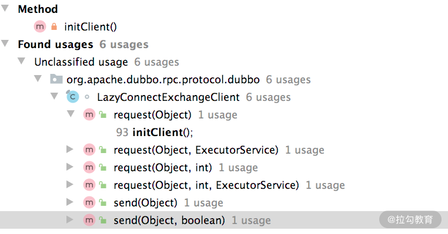

- 00 开篇词 深入掌握 Dubbo 原理与实现，提升你的职场竞争力.md.html
- 01 Dubbo 源码环境搭建：千里之行，始于足下.md.html
- 02 Dubbo 的配置总线：抓住 URL，就理解了半个 Dubbo.md.html
- 03 Dubbo SPI 精析，接口实现两极反转（上）.md.html
- 04 Dubbo SPI 精析，接口实现两极反转（下）.md.html
- 05 海量定时任务，一个时间轮搞定.md.html
- 06 ZooKeeper 与 Curator，求你别用 ZkClient 了（上）.md.html
- 07 ZooKeeper 与 Curator，求你别用 ZkClient 了（下）.md.html
- 08 代理模式与常见实现.md.html
- 09 Netty 入门，用它做网络编程都说好（上）.md.html
- 10 Netty 入门，用它做网络编程都说好（下）.md.html
- 11 简易版 RPC 框架实现（上）.md.html
- 12 简易版 RPC 框架实现（下）.md.html
- 13 本地缓存：降低 ZooKeeper 压力的一个常用手段.md.html
- 14 重试机制是网络操作的基本保证.md.html
- 15 ZooKeeper 注册中心实现，官方推荐注册中心实践.md.html
- 16 Dubbo Serialize 层：多种序列化算法，总有一款适合你.md.html
- 17 Dubbo Remoting 层核心接口分析：这居然是一套兼容所有 NIO 框架的设计？.md.html
- 18 Buffer 缓冲区：我们不生产数据，我们只是数据的搬运工.md.html
- 19 Transporter 层核心实现：编解码与线程模型一文打尽（上）.md.html
- 20 Transporter 层核心实现：编解码与线程模型一文打尽（下）.md.html
- 21 Exchange 层剖析：彻底搞懂 Request-Response 模型（上）.md.html
- 22 Exchange 层剖析：彻底搞懂 Request-Response 模型（下）.md.html
- 23 核心接口介绍，RPC 层骨架梳理.md.html
- 24 从 Protocol 起手，看服务暴露和服务引用的全流程（上）.md.html
- 25 从 Protocol 起手，看服务暴露和服务引用的全流程（下）.md.html
- 26 加餐：直击 Dubbo “心脏”，带你一起探秘 Invoker（上）.md.html
- 27 加餐：直击 Dubbo “心脏”，带你一起探秘 Invoker（下）.md.html
- 28 复杂问题简单化，代理帮你隐藏了多少底层细节？.md.html
- 29 加餐：HTTP 协议 + JSON-RPC，Dubbo 跨语言就是如此简单.md.html
- 30 Filter 接口，扩展 Dubbo 框架的常用手段指北.md.html
- 31 加餐：深潜 Directory 实现，探秘服务目录玄机.md.html
- 32 路由机制：请求到底怎么走，它说了算（上）.md.html
- 33 路由机制：请求到底怎么走，它说了算（下）.md.html
- 34 加餐：初探 Dubbo 动态配置的那些事儿.md.html
- 35 负载均衡：公平公正物尽其用的负载均衡策略，这里都有（上）.md.html
- 36 负载均衡：公平公正物尽其用的负载均衡策略，这里都有（下）.md.html
- 37 集群容错：一个好汉三个帮（上）.md.html
- 38 集群容错：一个好汉三个帮（下）.md.html
- 39 加餐：多个返回值不用怕，Merger 合并器来帮忙.md.html
- 40 加餐：模拟远程调用，Mock 机制帮你搞定.md.html
- 41 加餐：一键通关服务发布全流程.md.html
- 42 加餐：服务引用流程全解析.md.html
- 43 服务自省设计方案：新版本新方案.md.html
- 44 元数据方案深度剖析，如何避免注册中心数据量膨胀？.md.html
- 45 加餐：深入服务自省方案中的服务发布订阅（上）.md.html
- 46 加餐：深入服务自省方案中的服务发布订阅（下）.md.html
- 47 配置中心设计与实现：集中化配置 and 本地化配置，我都要（上）.md.html
- 48 配置中心设计与实现：集中化配置 and 本地化配置，我都要（下）.md.html
- 49 结束语 认真学习，缩小差距.md.html
- 捐赠
25 从 Protocol 起手，看服务暴露和服务引用的全流程（下）
在上一课时，我们以 DubboProtocol 实现为基础，详细介绍了 Dubbo 服务发布的核心流程。在本课时，我们继续介绍 DubboProtocol 中服务引用相关的实现。
refer 流程
下面我们开始介绍 DubboProtocol 中引用服务的相关实现，其核心实现在 protocolBindingRefer() 方法中：
public <T> Invoker<T> protocolBindingRefer(Class<T> serviceType, URL url) throws RpcException {
optimizeSerialization(url); // 进行序列化优化，注册需要优化的类
// 创建DubboInvoker对象
DubboInvoker<T> invoker = new DubboInvoker<T>(serviceType, url, getClients(url), invokers);
// 将上面创建DubboInvoker对象添加到invoker集合之中
invokers.add(invoker);
return invoker;
}
关于 DubboInvoker 的具体实现，我们先暂时不做深入分析。这里我们需要先关注的是getClients() 方法，它创建了底层发送请求和接收响应的 Client 集合，其核心分为了两个部分，一个是针对共享连接的处理，另一个是针对独享连接的处理，具体实现如下：
private ExchangeClient[] getClients(URL url) {
// 是否使用共享连接
boolean useShareConnect = false;
// CONNECTIONS_KEY参数值决定了后续建立连接的数量
int connections = url.getParameter(CONNECTIONS_KEY, 0);
List<ReferenceCountExchangeClient> shareClients = null;
if (connections == 0) { // 如果没有连接数的相关配置，默认使用共享连接的方式
useShareConnect = true;
// 确定建立共享连接的条数，默认只建立一条共享连接
String shareConnectionsStr = url.getParameter(SHARE_CONNECTIONS_KEY, (String) null);
connections = Integer.parseInt(StringUtils.isBlank(shareConnectionsStr) ? ConfigUtils.getProperty(SHARE_CONNECTIONS_KEY,
DEFAULT_SHARE_CONNECTIONS) : shareConnectionsStr);
// 创建公共ExchangeClient集合
shareClients = getSharedClient(url, connections);
}
// 整理要返回的ExchangeClient集合
ExchangeClient[] clients = new ExchangeClient[connections];
for (int i = 0; i < clients.length; i++) {
if (useShareConnect) {
clients[i] = shareClients.get(i);
} else {
// 不使用公共连接的情况下，会创建单独的ExchangeClient实例
clients[i] = initClient(url);
}
}
return clients;
}
当使用独享连接的时候，对每个 Service 建立固定数量的 Client，每个 Client 维护一个底层连接。如下图所示，就是针对每个 Service 都启动了两个独享连接：

Service 独享连接示意图
当使用共享连接的时候，会区分不同的网络地址（host:port），一个地址只建立固定数量的共享连接。如下图所示，Provider 1 暴露了多个服务，Consumer 引用了 Provider 1 中的多个服务，共享连接是说 Consumer 调用 Provider 1 中的多个服务时，是通过固定数量的共享 TCP 长连接进行数据传输，这样就可以达到减少服务端连接数的目的。

Service 共享连接示意图
那怎么去创建共享连接呢？创建共享连接的实现细节是在 getSharedClient() 方法中，它首先从 referenceClientMap 缓存（Map
private List<ReferenceCountExchangeClient> getSharedClient(URL url, int connectNum) {
String key = url.getAddress(); // 获取对端的地址(host:port)
// 从referenceClientMap集合中，获取与该地址连接的ReferenceCountExchangeClient集合
List<ReferenceCountExchangeClient> clients = referenceClientMap.get(key);
// checkClientCanUse()方法中会检测clients集合中的客户端是否全部可用
if (checkClientCanUse(clients)) {
batchClientRefIncr(clients); // 客户端全部可用时
return clients;
}
locks.putIfAbsent(key, new Object());
synchronized (locks.get(key)) { // 针对指定地址的客户端进行加锁，分区加锁可以提高并发度
clients = referenceClientMap.get(key);
if (checkClientCanUse(clients)) { // double check，再次检测客户端是否全部可用
batchClientRefIncr(clients); // 增加应用Client的次数
return clients;
}
connectNum = Math.max(connectNum, 1); // 至少一个共享连接
// 如果当前Clients集合为空，则直接通过initClient()方法初始化所有共享客户端
if (CollectionUtils.isEmpty(clients)) {
clients = buildReferenceCountExchangeClientList(url, connectNum);
referenceClientMap.put(key, clients);
} else { // 如果只有部分共享客户端不可用，则只需要处理这些不可用的客户端
for (int i = 0; i < clients.size(); i++) {
ReferenceCountExchangeClient referenceCountExchangeClient = clients.get(i);
if (referenceCountExchangeClient == null || referenceCountExchangeClient.isClosed()) {
clients.set(i, buildReferenceCountExchangeClient(url));
continue;
}
// 增加引用
referenceCountExchangeClient.incrementAndGetCount();
}
}
// 清理locks集合中的锁对象，防止内存泄漏，如果key对应的服务宕机或是下线，
// 这里不进行清理的话，这个用于加锁的Object对象是无法被GC的，从而出现内存泄漏
locks.remove(key);
return clients;
}
}
这里使用的 ExchangeClient 实现是 ReferenceCountExchangeClient，它是 ExchangeClient 的一个装饰器，在原始 ExchangeClient 对象基础上添加了引用计数的功能。
ReferenceCountExchangeClient 中除了持有被修饰的 ExchangeClient 对象外，还有一个 referenceCount 字段（AtomicInteger 类型），用于记录该 Client 被应用的次数。从下图中我们可以看到，在 ReferenceCountExchangeClient 的构造方法以及 incrementAndGetCount() 方法中会增加引用次数，在 close() 方法中则会减少引用次数。

referenceCount 修改调用栈
这样，对于同一个地址的共享连接，就可以满足两个基本需求：
- 当引用次数减到 0 的时候，ExchangeClient 连接关闭；
- 当引用次数未减到 0 的时候，底层的 ExchangeClient 不能关闭。
还有一个需要注意的细节是 ReferenceCountExchangeClient.close() 方法，在关闭底层 ExchangeClient 对象之后，会立即创建一个 LazyConnectExchangeClient ，也有人称其为“幽灵连接”。具体逻辑如下所示，这里的 LazyConnectExchangeClient 主要用于异常情况的兜底：
public void close(int timeout) {
// 引用次数减到0，关闭底层的ExchangeClient，具体操作有：停掉心跳任务、重连任务以及关闭底层Channel，这些在前文介绍HeaderExchangeClient的时候已经详细分析过了，这里不再赘述
if (referenceCount.decrementAndGet() <= 0) {
if (timeout == 0) {
client.close();
} else {
client.close(timeout);
}
// 创建LazyConnectExchangeClient，并将client字段指向该对象
replaceWithLazyClient();
}
}
private void replaceWithLazyClient() {
// 在原有的URL之上，添加一些LazyConnectExchangeClient特有的参数
URL lazyUrl = URLBuilder.from(url)
.addParameter(LAZY_CONNECT_INITIAL_STATE_KEY, Boolean.TRUE)
.addParameter(RECONNECT_KEY, Boolean.FALSE)
.addParameter(SEND_RECONNECT_KEY, Boolean.TRUE.toString())
.addParameter("warning", Boolean.TRUE.toString())
.addParameter(LazyConnectExchangeClient.REQUEST_WITH_WARNING_KEY, true)
.addParameter("_client_memo", "referencecounthandler.replacewithlazyclient")
.build();
// 如果当前client字段已经指向了LazyConnectExchangeClient，则不需要再次创建LazyConnectExchangeClient兜底了
if (!(client instanceof LazyConnectExchangeClient) || client.isClosed()) {
// ChannelHandler依旧使用原始ExchangeClient使用的Handler，即DubboProtocol中的requestHandler字段
client = new LazyConnectExchangeClient(lazyUrl, client.getExchangeHandler());
}
}
LazyConnectExchangeClient 也是 ExchangeClient 的装饰器，它会在原有 ExchangeClient 对象的基础上添加懒加载的功能。LazyConnectExchangeClient 在构造方法中不会创建底层持有连接的 Client，而是在需要发送请求的时候，才会调用 initClient() 方法进行 Client 的创建，如下图调用关系所示：

initClient() 方法的调用位置
initClient() 方法的具体实现如下：
private void initClient() throws RemotingException {
if (client != null) { // 底层Client已经初始化过了，这里不再初始化
return;
}
connectLock.lock();
try {
if (client != null) { return; } // double check
// 通过Exchangers门面类，创建ExchangeClient对象
this.client = Exchangers.connect(url, requestHandler);
} finally {
connectLock.unlock();
}
}
在这些发送请求的方法中，除了通过 initClient() 方法初始化底层 ExchangeClient 外，还会调用warning() 方法，其会根据当前 URL 携带的参数决定是否打印 WARN 级别日志。为了防止瞬间打印大量日志的情况发生，这里有打印的频率限制，默认每发送 5000 次请求打印 1 条日志。你可以看到在前面展示的兜底场景中，我们就开启了打印日志的选项。
分析完 getSharedClient() 方法创建共享 Client 的核心流程之后，我们回到 DubboProtocol 中，继续介绍创建独享 Client 的流程。
创建独享 Client 的入口在DubboProtocol.initClient() 方法，它首先会在 URL 中设置一些默认的参数，然后根据 LAZY_CONNECT_KEY 参数决定是否使用 LazyConnectExchangeClient 进行封装，实现懒加载功能，如下代码所示：
private ExchangeClient initClient(URL url) {
// 获取客户端扩展名并进行检查，省略检测的逻辑
String str = url.getParameter(CLIENT_KEY, url.getParameter(SERVER_KEY, DEFAULT_REMOTING_CLIENT));
// 设置Codec2的扩展名
url = url.addParameter(CODEC_KEY, DubboCodec.NAME);
// 设置默认的心跳间隔
url = url.addParameterIfAbsent(HEARTBEAT_KEY, String.valueOf(DEFAULT_HEARTBEAT));
ExchangeClient client;
// 如果配置了延迟创建连接的特性，则创建LazyConnectExchangeClient
if (url.getParameter(LAZY_CONNECT_KEY, false)) {
client = new LazyConnectExchangeClient(url, requestHandler);
} else { // 未使用延迟连接功能，则直接创建HeaderExchangeClient
client = Exchangers.connect(url, requestHandler);
}
return client;
}
这里涉及的 LazyConnectExchangeClient 装饰器以及 Exchangers 门面类在前面已经深入分析过了，就不再赘述了。
DubboProtocol 中还剩下几个方法没有介绍，这里你只需要简单了解一下它们的实现即可。
- batchClientRefIncr() 方法：会遍历传入的集合，将其中的每个 ReferenceCountExchangeClient 对象的引用加一。
- buildReferenceCountExchangeClient() 方法：会调用上面介绍的 initClient() 创建 Client 对象，然后再包装一层 ReferenceCountExchangeClient 进行修饰，最后返回。该方法主要用于创建共享 Client。
destroy方法
在 DubboProtocol 销毁的时候，会调用 destroy() 方法释放底层资源，其中就涉及 export 流程中创建的 ProtocolServer 对象以及 refer 流程中创建的 Client。
DubboProtocol.destroy() 方法首先会逐个关闭 serverMap 集合中的 ProtocolServer 对象，相关代码片段如下：
for (String key : new ArrayList<>(serverMap.keySet())) {
ProtocolServer protocolServer = serverMap.remove(key);
if (protocolServer == null) { continue;}
RemotingServer server = protocolServer.getRemotingServer();
// 在close()方法中，发送ReadOnly请求、阻塞指定时间、关闭底层的定时任务、关闭相关线程池，最终，会断开所有连接，关闭Server。这些逻辑在前文介绍HeaderExchangeServer、NettyServer等实现的时候，已经详细分析过了，这里不再展开
server.close(ConfigurationUtils.getServerShutdownTimeout());
}
ConfigurationUtils.getServerShutdownTimeout() 方法返回的阻塞时长默认是 10 秒，我们可以通过 dubbo.service.shutdown.wait 或是 dubbo.service.shutdown.wait.seconds 进行配置。
之后，DubboProtocol.destroy() 方法会逐个关闭 referenceClientMap 集合中的 Client，逻辑与上述关闭ProtocolServer的逻辑相同，这里不再重复。只不过需要注意前面我们提到的 ReferenceCountExchangeClient 的存在，只有引用减到 0，底层的 Client 才会真正销毁。
最后，DubboProtocol.destroy() 方法会调用父类 AbstractProtocol 的 destroy() 方法，销毁全部 Invoker 对象，前面已经介绍过 AbstractProtocol.destroy() 方法的实现，这里也不再重复。
总结
本课时我们继续上一课时的话题，以 DubboProtocol 为例，介绍了 Dubbo 在 Protocol 层实现服务引用的核心流程。我们首先介绍了 DubboProtocol 初始化 Client 的核心逻辑，分析了共享连接和独立连接的模型，后续还讲解了ReferenceCountExchangeClient、LazyConnectExchangeClient 等装饰器的功能和实现，最后说明了 destroy() 方法释放底层资源的相关实现。
关于 DubboProtocol，你若还有什么疑问或想法，欢迎你留言跟我分享。下一课时，我们将开始深入介绍 Dubbo 的“心脏”—— Invoker 接口的相关实现，这是我们的一篇加餐文章，记得按时来听课。
© 2019 - 2023 Liangliang Lee. Powered by gin and hexo-theme-book.